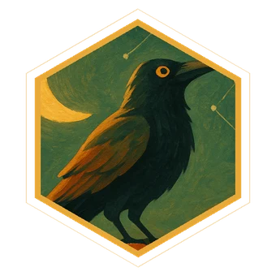

Why “Munin”?
In Norse mythology, Odin keeps two ravens: Huginn, thought, and Muninn, memory. Every morning Muninn flies out over the world and returns with what he has learned.
That is what this app does for you: it sends your curiosity out during the day and makes sure what it brings back is still there tomorrow.